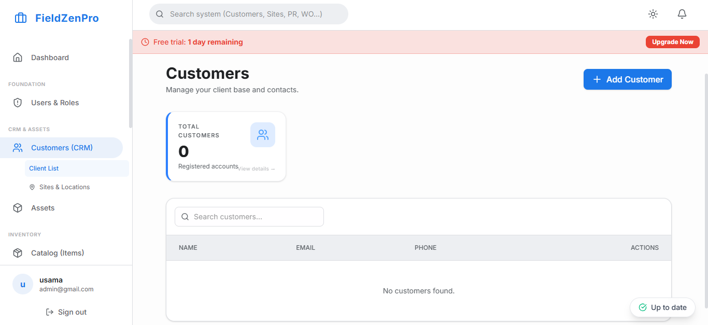

The phrase "best service management software" is searched thousands of times a month by business owners who are frustrated with their current tools and desperate for a better answer. The uncomfortable truth is there is no universally "best" platform—there is only the best platform for a specific combination of business size, industry vertical, workflow complexity, and budget.
What makes this decision genuinely difficult is that you are essentially betting your operational infrastructure on a product you have only seen for 30 minutes during a polished sales demo. The software you choose will touch every customer interaction, every technician's workday, and every dollar that flows through your business. Getting it wrong is expensive—both in migration costs and in the productivity losses during a botched implementation.
This guide provides an honest, vendor-neutral framework for identifying the best service management software for your specific situation. We will walk through the questions you must ask, the red flags you must watch for, and the criteria that actually predict long-term satisfaction.

Rather than trying to rank software platforms with a simple numbered list, think about fitness across four critical dimensions:
Does the software's core workflow match how your business actually operates? A platform designed for reactive emergency service calls has a fundamentally different architecture than one built for planned preventive maintenance contracts. If your revenue is primarily recurring maintenance, you need a platform with strong contract management and auto-scheduling. If your revenue is primarily emergency repairs, you need a platform built around rapid dispatch and dynamic routing. Forcing the wrong architecture onto your business creates constant friction.
Software that is perfect for your business today may become a bottleneck at twice your current size. Conversely, buying an enterprise platform designed for 200 trucks when you have eight will saddle you with unnecessary complexity and cost. Evaluate platforms with your 3-year growth trajectory in mind. Ask vendors specifically: "What is the largest customer in my industry vertical using your platform, and what does their operation look like?"
How does the platform integrate with your existing technology stack? If you use QuickBooks for accounting, the software must provide a native, two-way QuickBooks integration—not a manual CSV export. If you use specific payment processors, GPS tracking hardware, or IoT sensors on equipment, these integrations must be validated during the trial period, not assumed.
The best software in the world delivers zero value if your team refuses to use it. User adoption is primarily a function of interface quality. Before committing to any platform, run a structured pilot: have two or three of your most skeptical technicians and dispatchers use the software for two full working days on real jobs. Their candid feedback after the pilot is worth more than any sales reference call.
"Great service management software should reduce the cognitive load on your team—not add to it. If adopting the software requires your dispatchers to think harder, it is the wrong software."
We built FieldZenPro knowing that service business owners are sophisticated, skeptical buyers who have been burned by overpromising software vendors before. That is why we offer a 14-day free trial with full access to every feature—no credit card required, no sales call mandatory. We want you to test us against your real workflows, with your real data, before you make any commitment.
Our platform scores in the top tier on all four dimensions of "best" for growing service businesses: it matches the workflows of reactive and recurring service models, scales smoothly from 2 to 200 technicians, integrates natively with QuickBooks and Stripe, and consistently earns five-star reviews from field technicians for ease of use.
Run FieldZenPro through your own buyer's framework with a free 14-day trial. No pressure, just proof.
Start Your 14-Day Free Trial